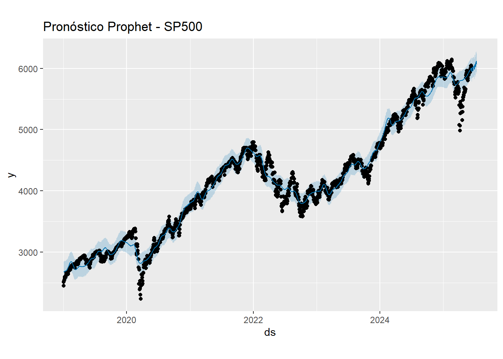
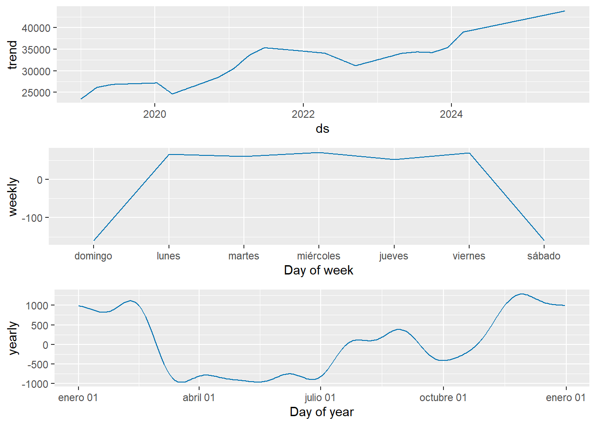
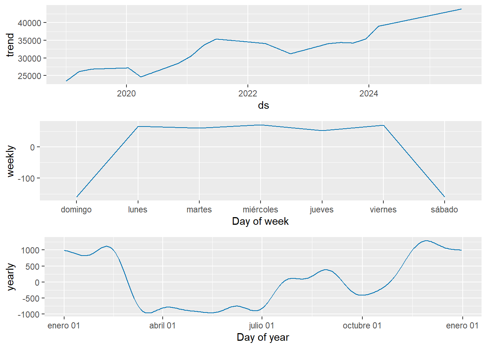
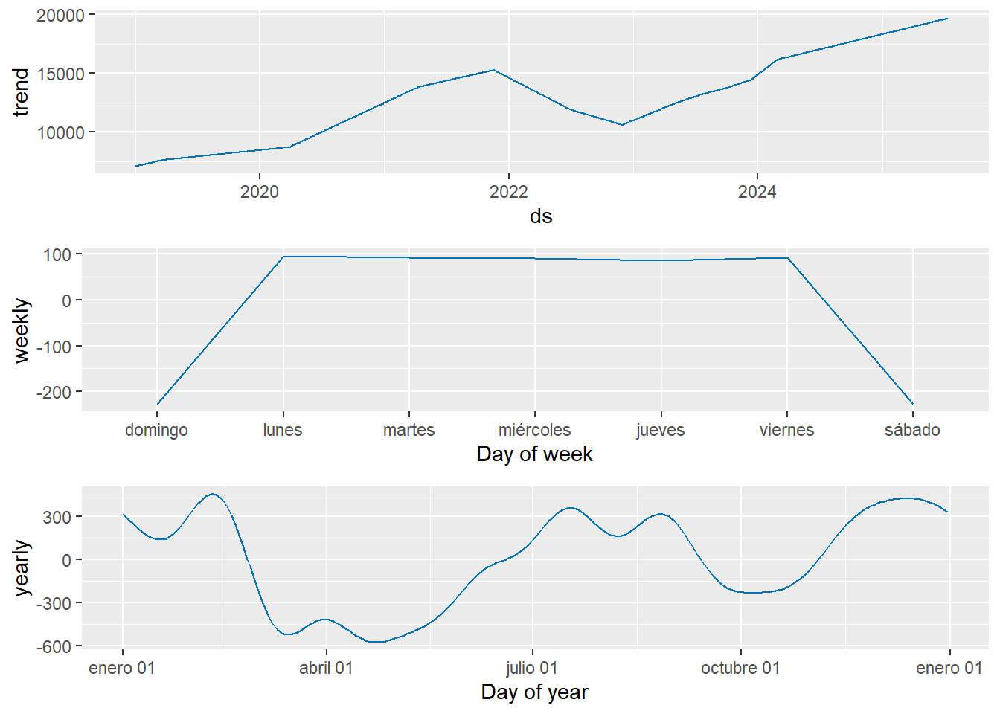
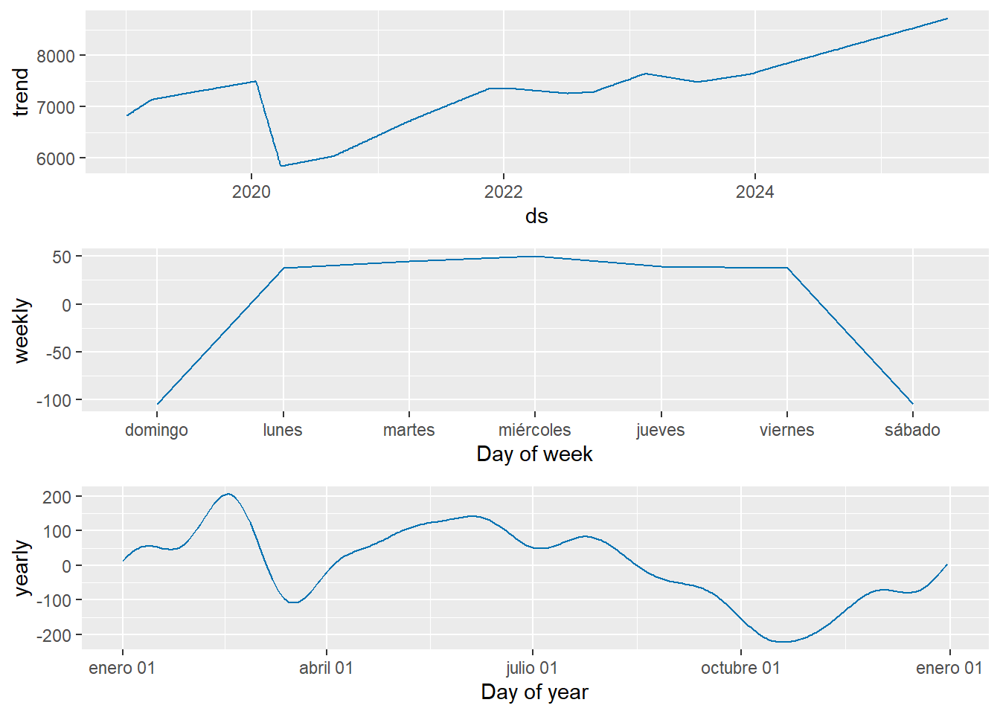

Chapter 7 Modelo Prophet
En este proyecto, Prophet se empleó como alternativa robusta frente a modelos clásicos como Holt-Winters y ARIMA, debido a su capacidad para:
1. Adaptarse automáticamente a cambios de tendencia.
2. Capturar estacionalidades complejas sin requerir diferenciación previa.
3. Generar intervalos de confianza para la predicción.
4. Trabajar bien incluso con series no estacionarias o con efectos de fin de semana.
Proceso implementado
Se diseñó una función iterativa en R para aplicar Prophet sobre las nueve series temporales de los principales índices bursátiles globales. El proceso incluyó:
1. Conversión de series zoo a data.frame Prophet con columnas ds (fecha) y y (precio).
2. Ajuste del modelo Prophet mediante la función prophet().
3. Generación de predicciones a 30 días con make_future_dataframe() y predict().
Visualización del ajuste y forecast:
Se mostró el gráfico con los valores observados, la predicción (línea azul) y las bandas de confianza al 80% y 95%.
Se graficaron también los componentes de la regresión: tendencia, estacionalidad semanal y anual.
Evaluación de desempeño
Se calcularon las métricas MAE, RMSE y MAPE sobre el ajuste histórico.
Almacenamiento de resultados para cada índice en una lista estructurada que permite su análisis posterior.
7.1 Análisis de modelo Prophet.
1. SP500 (Estados Unidos)
Tendencia: Claramente creciente, con inflexión negativa en 2022 y repunte sostenido en 2024.
Estacionalidad semanal: Fuerte alza los lunes, caídas el domingo y sábado. Patrón de apertura optimista.
Estacionalidad anual: Pico en enero y octubre; caídas hacia abril. Corresponde a ciclos financieros globales.
Pronóstico: Se proyecta una continuación del crecimiento. Las bandas de confianza son estrechas, lo que indica alta certidumbre en la predicción a corto plazo.
Desempeño:
MAE: 157.3
RMSE: 205.8
MAPE: 3.99% → Muy buen ajuste
2. Dow Jones (Estados Unidos)
Tendencia: Ascenso constante, con altibajos en 2022. Comportamiento robusto hasta 2025.
Estacionalidad semanal: Lunes y viernes positivos, sábado negativo. Consistente con los patrones bursátiles occidentales.
Estacionalidad anual: Alta oscilación, con picos a principios y finales de año.
Pronóstico: Continua la tendencia creciente con alta confianza. La predicción es suave y sigue el patrón histórico.
Desempeño:
MAE: 1096.5
RMSE: 1484.5
MAPE: 3.48% → Excelente predicción considerando la magnitud del índice
3. Nasdaq (Estados Unidos)
Tendencia: Subida intensa durante 2020-2021 (boom tecnológico), corrección en 2022, nuevo crecimiento hasta 2025.
Estacionalidad semanal: Máximos en lunes, bajones en fin de semana.
Estacionalidad anual: Alta actividad en enero, abril y octubre.
Pronóstico: Se anticipa crecimiento con leve oscilación. Las bandas son moderadas, lo que implica confianza razonable.
Desempeño:
MAE: 648.9
RMSE: 836.6
MAPE: 5.29% → Buena capacidad, aunque menor que SP500
4. DAX (Alemania)
Tendencia: Fluctuante con una fuerte caída en 2020 y una recuperación prolongada hasta 2025.
Estacionalidad semanal: Miércoles positivos, lunes negativos. Patrón distinto al estadounidense.
Estacionalidad anual: Suave, con caídas en el segundo semestre.
Pronóstico: Predice crecimiento sostenido. Las bandas de confianza son más anchas, reflejando mayor incertidumbre estructural.
Desempeño:
MAE: 582.4
RMSE: 799.1
MAPE: 4.07% → Ajuste adecuado, pero con variabilidad significativa
5. CAC 40 (Francia)
Tendencia: Crecimiento constante con estancamiento moderado desde 2024.
Estacionalidad semanal: Lunes muy positivo, fin de semana negativo.
Estacionalidad anual: Claras caídas en el tercer trimestre.
Pronóstico: El modelo proyecta estabilización del índice, sin rupturas abruptas. Bandas de confianza son relativamente estrechas.
Desempeño:
MAE: 245.4
RMSE: 325.7
MAPE: 3.96% → Buen ajuste, especialmente en trayectorias suaves
6. FTSE 100 (Reino Unido)
Tendencia: Recuperación lenta post-Brexit y COVID-19, pero sostenida hasta 2025.
Estacionalidad semanal: Más plana, pero lunes y viernes destacan como días positivos.
Estacionalidad anual: Caída leve a mediados de año, recuperación hacia diciembre.
Pronóstico: Tendencia alcista con menor pendiente que los índices estadounidenses. Las bandas de confianza son muy controladas, lo que muestra alta estabilidad.
Desempeño:
MAE: 204.8
RMSE: 302.9
MAPE: 2.84% → Excelente predicción
Nikkei 225 (Japón)
Tendencia: Tendencia positiva con rupturas en 2020 y 2023 (posibles intervenciones económicas).
Estacionalidad semanal: Patrón fuerte en lunes-martes, negativo en sábado.
Estacionalidad anual: Ondulaciones claras con buena periodicidad.
Pronóstico: Se proyecta una continuidad de la tendencia con leve desaceleración. Las bandas son estrechas, lo cual es positivo.
Desempeño:
MAE: 1176.8
RMSE: 1558.6
MAPE: 4.22% → Buen ajuste, estable a pesar de choques
8. Hang Seng (Hong Kong)
Tendencia: Estructuralmente descendente hasta 2023, con ligera recuperación en 2024.
Estacionalidad semanal: Fuertemente negativa en fines de semana.
Estacionalidad anual: Alta oscilación, reflejo de la volatilidad política y económica de la región.
Pronóstico: El modelo sugiere una recuperación débil. Las bandas son anchas, reflejando incertidumbre elevada.
Desempeño:
MAE: 1057.9
RMSE: 1313.9
MAPE: 4.77% → Ajuste moderado, con posibles desviaciones
9. Shanghai Composite (China)
Tendencia: Sin una dirección fuerte; presenta ciclos internos controlados.
Estacionalidad semanal: Comportamiento regular, sin grandes picos.
Estacionalidad anual: Oscilaciones menores, propias de un mercado regulado.
Pronóstico: Se proyecta una continuación de la estabilidad con leve crecimiento. Bandas de confianza estrechas, lo que sugiere alta confiabilidad.
Desempeño:
MAE: 100.2
RMSE: 132.3
MAPE: 3.26% → Muy buen rendimiento en entorno estable
7.2 Implementación de lógicas y funciones para Prophet.
Code
# Inicializamos estructuras
resultados_prophet <- list()
graficos_prophet <- list()
metricas_prophet <- data.frame(
Indice = character(),
MAE = numeric(),
RMSE = numeric(),
MAPE = numeric(),
stringsAsFactors = FALSE
)
# Función para ajustar Prophet y graficar
ajustar_prophet <- function(serie_zoo, nombre_indice) {
cat("\n\n=========== PROPHET -", nombre_indice, "===========\n")
# Paso 1: convertir a data.frame
df <- data.frame(
ds = index(serie_zoo),
y = as.numeric(serie_zoo)
)
df <- na.omit(df)
# Paso 2: ajustar modelo
modelo <- prophet(df)
# Paso 3: crear marco de fechas futuras y predecir
futuro <- make_future_dataframe(modelo, periods = 30)
pronostico <- predict(modelo, futuro)
# Paso 4: guardar gráfico principal de predicción
grafico_prediccion <- plot(modelo, pronostico) +
ggtitle(paste("Pronóstico Prophet -", nombre_indice))
print(grafico_prediccion) # Mostrar el gráfico en RMarkdown
# Paso 5: mostrar componentes (estacionalidad, tendencia)
prophet_plot_components(modelo, pronostico)
# Paso 6: calcular métricas de ajuste
obs <- df$y
pred <- tail(pronostico$yhat, length(obs))
mae_val <- mae(obs, pred)
rmse_val <- rmse(obs, pred)
mape_val <- mape(obs, pred) * 100
# Imprimir métricas
cat("MAE:", round(mae_val, 3),
"- RMSE:", round(rmse_val, 3),
"- MAPE:", round(mape_val, 3), "%\n")
# Paso 7: guardar resultados
resultados_prophet[[nombre_indice]] <<- list(
modelo = modelo,
forecast = pronostico,
grafico = grafico_prediccion,
metrics = c(MAE = mae_val, RMSE = rmse_val, MAPE = mape_val)
)
graficos_prophet[[nombre_indice]] <<- grafico_prediccion
metricas_prophet <<- rbind(metricas_prophet, data.frame(
Indice = nombre_indice,
MAE = round(mae_val, 3),
RMSE = round(rmse_val, 3),
MAPE = round(mape_val, 3)
))
}7.3 Implementación a todas las series de tiempo mediante ciclos iterativos
Code
##
##
## =========== PROPHET - SP500 ===========
## MAE: 157.295 - RMSE: 205.788 - MAPE: 3.986 %
##
##
## =========== PROPHET - DowJones =========== 

## MAE: 1096.486 - RMSE: 1484.498 - MAPE: 3.483 %
##
##
## =========== PROPHET - Nasdaq ===========
## MAE: 648.857 - RMSE: 836.626 - MAPE: 5.293 %
##
##
## =========== PROPHET - DAX ===========
## MAE: 582.431 - RMSE: 799.083 - MAPE: 4.073 %
##
##
## =========== PROPHET - CAC40 ===========
## MAE: 245.381 - RMSE: 325.669 - MAPE: 3.958 %
##
##
## =========== PROPHET - FTSE100 ===========
## MAE: 204.775 - RMSE: 302.852 - MAPE: 2.839 %
##
##
## =========== PROPHET - Nikkei225 ===========
## MAE: 1176.789 - RMSE: 1558.612 - MAPE: 4.219 %
##
##
## =========== PROPHET - HangSeng ===========## MAE: 1057.952 - RMSE: 1313.872 - MAPE: 4.771 %
##
##
## =========== PROPHET - ShanghaiComposite ===========## MAE: 100.208 - RMSE: 132.263 - MAPE: 3.257 %7.4 Tabla de resumen
Code
| Indice | MAE | RMSE | MAPE |
|---|---|---|---|
| SP500 | 157.295 | 205.788 | 3.986 |
| DowJones | 1096.486 | 1484.498 | 3.483 |
| Nasdaq | 648.857 | 836.626 | 5.293 |
| DAX | 582.431 | 799.083 | 4.073 |
| CAC40 | 245.381 | 325.669 | 3.958 |
| FTSE100 | 204.775 | 302.852 | 2.839 |
| Nikkei225 | 1176.789 | 1558.612 | 4.219 |
| HangSeng | 1057.952 | 1313.872 | 4.771 |
| ShanghaiComposite | 100.208 | 132.263 | 3.257 |